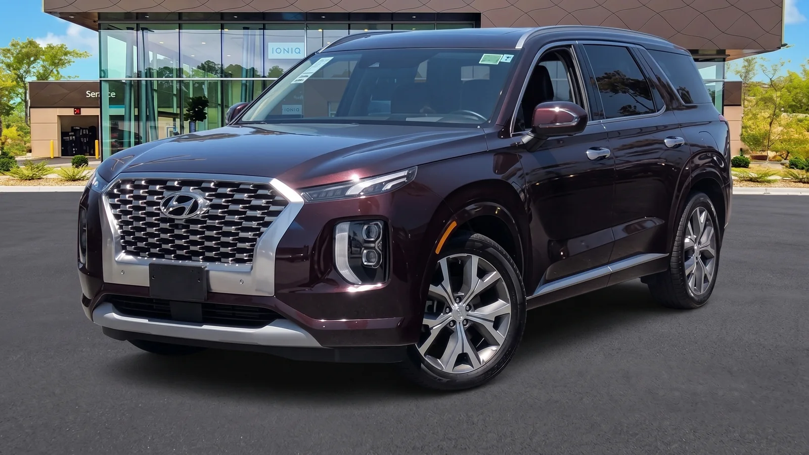

Tier 1Widest range
Standard used Hyundai
Many model years and price points. Passes our dealer inspection before it lists, and may still carry the balance of the original factory warranty. Typically the lowest price of the three tiers.
A Hyundai used car is a pre-owned Hyundai vehicle inspected and reconditioned before resale. At Dalton Hyundai National City, our used inventory ranges from recent off-lease models to budget commuters, and Hyundai Certified Pre-Owned units carry factory-backed coverage. This guide explains how to shop, what to verify, and which checks matter most. See live used inventory at hyundaidalton.com or call our sales team at (619) 452-3217.

DALTON HYUNDAI NATIONAL CITY · USED & CPONot every pre-owned Hyundai is the same. We stock three broad tiers, and the difference matters most for warranty.
Standard used cars span many model years and price points. Hyundai Certified Pre-Owned (CPO) cars meet a factory inspection standard and add manufacturer-backed warranty coverage. A third group is non-Hyundai trade-ins we accept and recondition.
The difference matters most for warranty. Hyundai's CPO program is detailed on hyundaiusa.com. Standard used cars may still carry the balance of the original Hyundai 5-year/60,000-mile new-vehicle limited warranty and 10-year/100,000-mile powertrain limited warranty, depending on age and mileage. We confirm remaining coverage on each vehicle before it lists.
Many model years and price points. Passes our dealer inspection before it lists, and may still carry the balance of the original factory warranty. Typically the lowest price of the three tiers.
Meets Hyundai's factory CPO inspection standard. Adds manufacturer-backed warranty coverage, is limited by Hyundai age and mileage rules, and includes a vehicle history report as part of the program.
Other makes we accept and recondition. The same intake inspection before listing, often at budget-friendly prices for shoppers focused on value over badge.
Warranty is where the tiers separate. We confirm remaining factory or CPO coverage on each vehicle, in writing, before it lists, so you know exactly what you're buying.
If you want a new Hyundai instead, our trim-comparison pages cover SE vs SEL and Limited vs Calligraphy, and we can walk you through the Elantra, Tucson, Santa Fe, Kona, and Palisade lineups in person or at hyundaidalton.com. This page is for buyers who want pre-owned value over the lowest sticker on a new unit.
We serve San Diego, Chula Vista, El Cajon, Kearny Mesa, and Imperial Beach from 3150 National City Blvd.
Not every pre-owned Hyundai is the same. The difference matters most for warranty, and we confirm remaining coverage on each vehicle before it lists.
Reviewed and posted by the Dalton Hyundai National City sales team.
Note · Used inventory turns quickly and remaining coverage varies car to car. CPO terms change, so verify program details at hyundaiusa.com. Call (619) 452-3217 to confirm a specific unit is still available.
A used Hyundai sidesteps the steepest part of depreciation, and that's where most of the value hides.
New cars lose the most value in the first two to three years. Buying a two- or three-year-old Hyundai shifts that loss to the first owner. You get a recent platform at a lower price.
Hyundai's reputation helps here. Independent reviewers track reliability and resale closely. For third-party scoring, check Consumer Reports and resale data on kbb.com. We do not quote our own reliability rankings; we point you to the sources that measure them.
Counterintuitively, the cheapest used Hyundai on a lot is not always the best buy. A slightly pricier CPO unit with remaining factory warranty often costs less over three years once you account for repair risk. We walk buyers through that math instead of just the monthly payment.
The cheapest used Hyundai on the lot is not always the best buy. A CPO unit with remaining factory warranty often costs less over three years once you account for repair risk.
Here is how the two tiers compare on the points buyers ask about most.
| Factor | Standard used Hyundai Lower price, wider range | Factory-backed Hyundai Certified Pre-Owned Added coverage & inspection |
|---|---|---|
| Inspection | Our dealer inspection | Factory CPO inspection standard |
| Warranty | Balance of original factory warranty (if any) | Manufacturer-backed CPO coverage |
| Eligibility | Wide range of years/mileage | Limited by Hyundai age/mileage rules |
| Vehicle history | Provided on request | Provided as part of program |
| Price | Typically lower | Typically higher for added coverage |
For exact CPO warranty terms by model year, ask us for current Hyundai specs, or read the program details on hyundaiusa.com. Terms change, so we verify each car's eligibility at intake rather than assume it.
Our sales team walked the used row this week and pulled units across several segments: compact sedans, the Tucson and Santa Fe in the SUV aisle, and a few non-Hyundai trades.
On three off-lease sedans, our team inspected tire wear and verified the service history matched the odometer before the cars were listed.
Last month, a shopper came in convinced a CPO Tucson was overpriced next to a private-party listing online. Our sales team pulled both histories side by side. The private car had an open recall and no service records. We confirmed the CPO unit's factory coverage and inspection, and the gap in long-term cost made the decision clear.
Most buyers assume a low odometer is the most important number. Counterintuitively, service consistency matters more. A 60,000-mile Hyundai with complete records often outlasts a 30,000-mile car that skipped maintenance. Our team found this pattern repeatedly when we cross-checked history reports against physical inspection.
As of June 2026, used inventory turns quickly in our market, so the exact units on the lot change week to week. Every Dalton used car gets a Complimentary In-Drive Alignment Check and Tire Check at each service visit, part of the Dalton VIP Advantage Program. To confirm a specific car is still available, call our sales team at (619) 452-3217.
A 60,000-mile Hyundai with complete records often outlasts a 30,000-mile car that skipped maintenance. Service consistency matters more than the odometer.
A few checks protect you whether you buy from us or elsewhere. Do these before signing.
We run these same checks on every car before it lists. If you find something we missed, we want to hear it before the sale, not after.
We run these same checks on every car before it lists. If you find something we missed, we want to hear it before the sale, not after.
Used-car financing works much like new-car financing, with rates that vary by credit, term, and the vehicle's age.
We do not publish fixed rates here because offers change. Ask us for current offers and we will match terms to your situation.
Start a pre-qualification on our financing page. If you have a trade-in, bring it; applying its value to a used Hyundai can lower your monthly payment more than you expect. For valuation context before you come in, Edmunds and Kelley Blue Book both publish trade-in and market-value ranges you can check against your current vehicle.
Note · Financing offers change. Ask our team for current terms, or start a pre-qualification at hyundaidalton.com/finance.aspx before you visit.
Buying close to home matters for service. Our service center handles maintenance, recalls, and warranty work at the same National City location.
Service hours run Monday through Friday 7:00 AM to 6:00 PM and Saturday 8:00 AM to 3:00 PM. Reach the service team at (619) 314-5768. For parts, call (619) 604-0487.
We serve buyers across San Diego, Chula Vista, El Cajon, Kearny Mesa, and Imperial Beach. Owning a used Hyundai near where you live keeps service simple and keeps your warranty work with a Hyundai-trained team.
Ready to move? Here's the path from search to keys:
We are at 3150 National City Blvd, National City, CA 91950, an easy drive for shoppers across San Diego County.
Buyers come to us from National City, San Diego, Chula Vista, El Cajon, Kearny Mesa, and Imperial Beach, all within a short hop of our location on National City Blvd. From the South Bay you're a few minutes up the I-5; from El Cajon or Kearny Mesa, the 805 and the 8 bring you right in. If you've been hunting a used Hyundai anywhere in the metro, we're a convenient stop right off the freeway.
One of the conveniences of buying here: we're open for Sunday sales from 10:00 AM to 6:00 PM, so you can shop the used row on a day most people actually have free. Service and parts are closed Sundays, so if you need a question answered by a technician, plan a Saturday-morning visit before the 3:00 PM close. Reach sales at (619) 452-3217, service at (619) 314-5768, and parts at (619) 604-0487.
Formerly Frank Hyundai, Dalton Hyundai National City has long served drivers throughout San Diego, Chula Vista, El Cajon, Kearny Mesa, and Imperial Beach, led by General Manager Cedric Butler, with sales managed by Sergio Martell and Mark Moore.
We pull the vehicle history report on every used car and match service dates to the odometer before it lists.
We check the NHTSA recall database by VIN during intake and address open items before listing a car.
We confirm each car's tier, standard used or Certified Pre-Owned, and verify remaining factory or CPO coverage in writing.
Standard used Hyundais span many model years and price points, and may carry the balance of the 5-yr/60,000-mi new-vehicle and 10-yr/100,000-mi powertrain limited warranties.
Hyundai Certified Pre-Owned units meet a factory inspection standard and add manufacturer-backed warranty coverage.
Every Dalton used car gets a Complimentary In-Drive Alignment Check and Tire Check at each service visit, part of the Dalton VIP Advantage Program.
Sales Mon-Sat 9 AM-8 PM
Sunday 10 AM-6 PM
Service Mon-Fri 7 AM-6 PM · Sat 8 AM-3 PM
Sales (619) 452-3217
Service (619) 314-5768
Parts (619) 604-0487
3150 National City Blvd, National City, CA 91950.
A standard used Hyundai passes our dealer inspection and may carry the balance of its original factory warranty. A Hyundai Certified Pre-Owned car meets Hyundai's factory CPO inspection standard and adds manufacturer-backed coverage.
CPO units cost more but reduce repair risk. We confirm each car's tier and remaining coverage before it lists.
It depends on the car's age and mileage. Many used Hyundais still carry part of the original factory warranty, and CPO cars add separate manufacturer-backed coverage.
We verify the exact remaining terms on each vehicle in writing before sale. Ask us for current Hyundai specs on a specific unit.
Enter the car's VIN at nhtsa.gov/recalls to see any open safety recalls. We also check recalls during intake and address open items before listing a car.
If a recall appears after your purchase, our service team at (619) 314-5768 can handle it. Recall repairs are typically free.
A two- to three-year-old Hyundai avoids the steepest depreciation while keeping a recent platform. For third-party resale and reliability data, check kbb.com and Consumer Reports. We point you to those sources rather than quote our own rankings.
The best value often balances price against remaining warranty.
Yes. We offer used-car financing with terms based on credit, loan length, and the vehicle. Rates change, so we do not publish fixed numbers here.
Start a pre-qualification on our finance page or ask us for current offers. A trade-in can lower your monthly payment.
We are at 3150 National City Blvd, National City, CA, 91950, serving San Diego, Chula Vista, El Cajon, Kearny Mesa, and Imperial Beach. Our sales line is (619) 452-3217.
We hold a 4.3-star Google rating from roughly 2,800 reviews and counting. Visit hyundaidalton.com for current inventory.
Hyundai Certified Pre-Owned program details described from Hyundai's published information at hyundaiusa.com; terms change, so we verify each car's eligibility at intake. Open recalls should be checked by VIN at nhtsa.gov/recalls. Market values and third-party reliability data should be confirmed at edmunds.com, kbb.com, and Consumer Reports, and real-world fuel economy at fueleconomy.gov. Used inventory turns quickly, for current stock on a specific unit, call Sales at (619) 452-3217.
If a question about buying a used Hyundai at Dalton Hyundai National City is not answered here, call (619) 452-3217 and ask for a sales advisor, or browse used inventory at hyundaidalton.com.
Browse the current used and CPO inventory at hyundaidalton.com, get financing sorted before you visit, then call our sales team with a specific model in mind. We're here to guide you every step of the way.